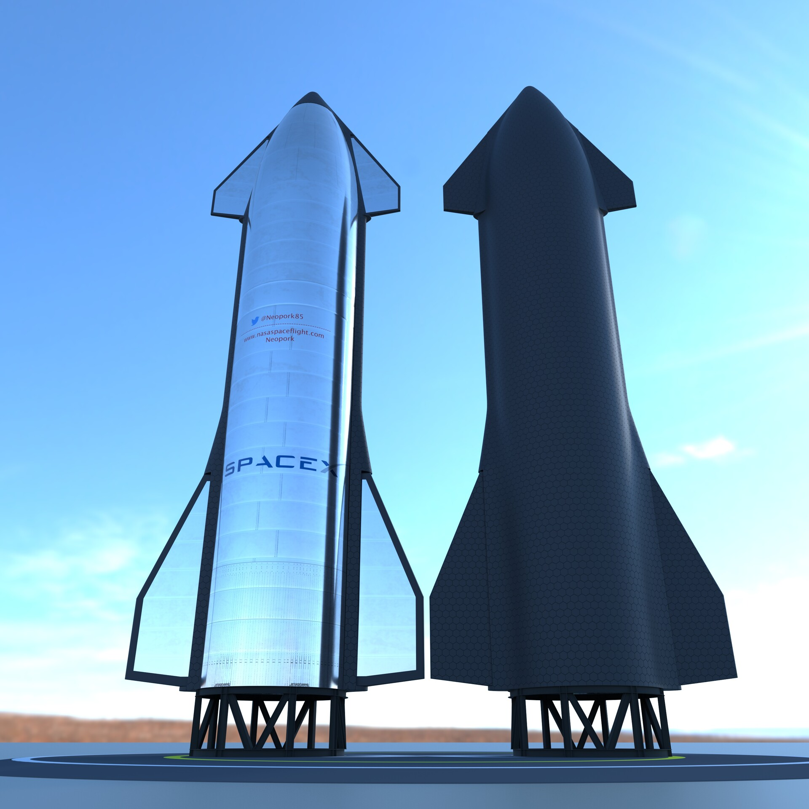

Starship is a reusable launch system in development by American aerospace company SpaceX, which consists of a first stage named Super Heavy and a second stage named Starship. Both stages are made from stainless steel and designed to hold liquid oxygen and liquid methane. Before launch, specialized tower stacks Starship's stages and launch pad to mount the vehicle. During liftoff, Super Heavy's 33 Raptor engines produce 72 MN (16,000,000 lbf) of thrust, twice that of a Saturn V rocket. The Starship spacecraft fires three Raptors Vacuum in space, move two pairs of flaps to control its descent, and fire three Raptor during landing. Starship can place more than 100 metric tons (220,000 lb) to low Earth orbit; higher Earth and other orbits are accessible after being refueled by tanker Starships. With modifications, Starship can also land on the Moon and Mars.
